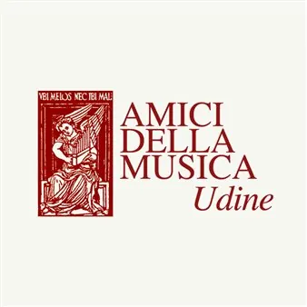

da ven 16 ott a ven 16 apr · dalle 19:22
105th Concert season Amici della musica 2026-2027
Music by Respighi, Pizzetti, Mannucci, Zoccatelli.
 Indicazioni
Indicazioni
- Costi e prenotazioni
- Costo non indicato · Prenotazione non indicata
- Programma
- Programma da verificare. Apri la fonte ufficiale per orari e possibili aggiornamenti.
- In caso di maltempo
- Nessuna indicazione specifica pubblicata.
- Note
- Acquisito automaticamente dalla fonte.
L’EVENTO
Descrizione completa
Penderecki String Quartet / Tomadini String Orchestra
Teatro Palamostre, 7:22 pm – “Timeless Masterpieces”
Jeremy Bell, violin · Jerzy Kapłanek, violin · Christine Vlajk, viola · Katie Schlaikjer, cello
Music by Mozart, Beethoven, Penderecki.
Concerti Torriani – “Italian Music Only”
Torre di S. Maria, 5:00 pm
Miranda Mannucci, violin · Sofia Dindo, piano
Music by Respighi, Pizzetti, Mannucci, Zoccatelli.
In collaboration with the Società Italiana dei Compositori SIMC WEDNESDAY, 4 NOVEMBER 2026
Note d’Autore
Quintet “Souvenir de Voyage”
Teatro Palamostre, 7:22 pm
F. Rosciglione, voice · M. Cappello, piano · P. Ranucci, double bass · G. Tirabassi, drums · R. Dousset, flute
Tiziana Arina and Mariano Navone, dance
From film soundtracks to jazz, from chansonniers to singer-songwriters FRIDAY, 20 NOVEMBER 2026 *
Concerti Torriani – “I Play Classical”
Morgen Piano Trio, violin, cello, piano
Music by Mozart, Schubert, Šostakovič WEDNESDAY, 25 NOVEMBER 2026
Kazakh Chamber Orchestra – “Beyond”
Aiman Mussakayajeva, violin
Music by Mendelssohn, Mozart WEDNESDAY, 13 JANUARY 2027
Lule Elezi, piano – “Classically”
Music by Beethoven, Chopin FRIDAY, 22 JANUARY 2027 *
Concerti Torriani – “Black and White”
Antonio Di Cristofano, piano
Music by Schubert, Brahms, Rachmaninoff TUESDAY, 26 JANUARY 2027
IMK TRIO International – “Chamber Music Masterpieces”
Jiman Wee, violin · Thomas Selditz, viola · Jungwon Jin, piano
Oliva & PiCello Bros. – “Premieres”
Andrea Oliva, flute · Francesco Pepicelli, cello · Angelo Pepicelli, piano
Music by Ravel, Françaix, Kapustin, Šostakovič FRIDAY, 19 FEBRUARY 2027 *
Concerti Torriani – “The Sound Narrated: Caro Respighi”
Torre di S. Maria, 5:00 pm, with image projection
Valerio Premuroso, piano · Alessandro Castellucci, actor
Tiberius String Quartet – “Energy and Radiance”
Music by Haydn, Bartók, Brahms FRIDAY, 12 MARCH 2027 *
Concerti Torriani – “Puccini’s Women”
MAD Musica Arte Donna Project
Silvia Di Falco, soprano · Angela Ignacchiti, piano
Music by Giacomo Puccini FRIDAY, 19 MARCH 2027 *
Concerti Torriani – “The Other Beethoven”
Luisa Sello, flute · Bruno Canino, piano · Maria Chiara Bignozzi, bassoon · Doris Vincek, flute
Music by Beethoven – ERT CONCERT TUESDAY, 30 MARCH 2027
Vasco Dantas, piano – “Musical Follies and Dreams”
Music by R. Schumann, Rachmaninov, Liszt WEDNESDAY, 7 APRIL 2027
Quintetto Dedalo – “Romantic Echoes”
Ruben Galloro and Giovanni Putzulu, violin · Luca Infante, viola · Alessandro Ricobello, cello
Music by R. Schumann, A. Beach FRIDAY, 16 APRIL 2027 *
Concerti Torriani – “Chopin... Jazz Man?”
Gerard Gasparian, piano
IL PROGRAMMA
Programma e orari
Appuntamenti raccolti dalle fonti elencate. Dove manca un orario, non è ancora disponibile in questa scheda.
Programma pubblicato
- Dal 2026-10-16 al 2027-04-16
INFORMAZIONI UTILI
Prima di partire
- Controllare la fonte prima di partire.
ORGANIZZAZIONE